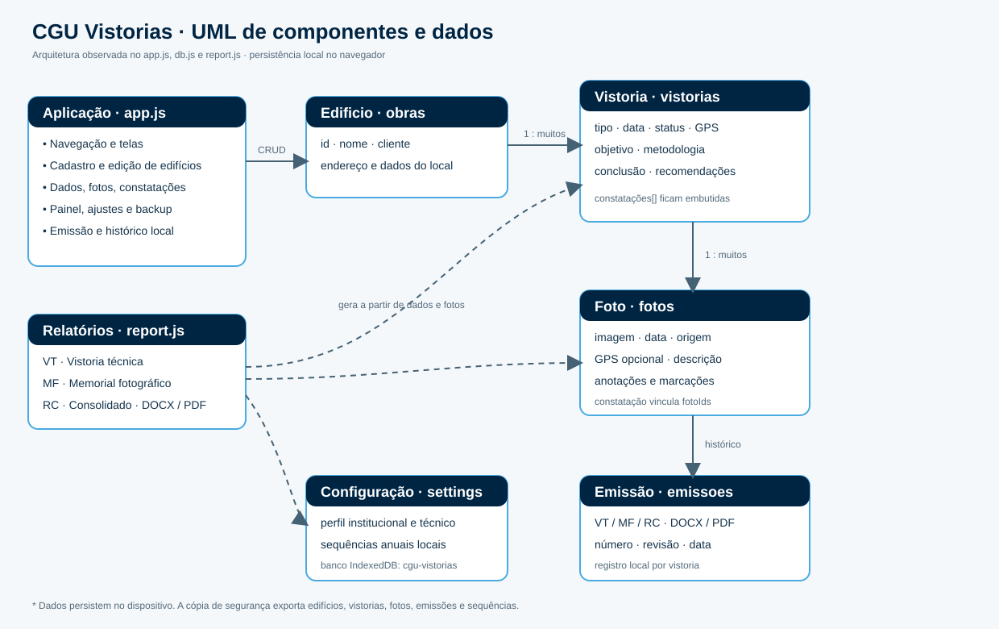
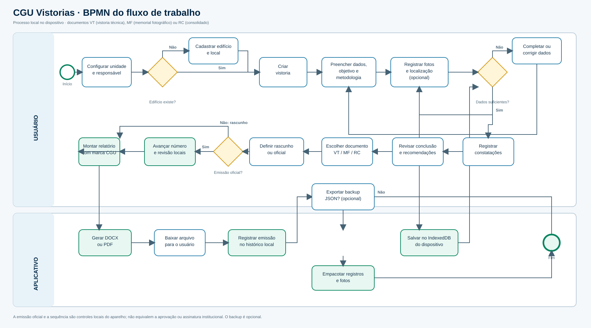

UML · componentes e dados
Visão da aplicação, do gerador de relatórios e dos registros armazenados localmente. “Constatação” é uma lista embutida na vistoria; as fotos são registros próprios e podem ser vinculadas por identificador.


BPMN · processo de vistoria
Fluxo entre usuário e aplicativo: preparação, registro das evidências, verificação dos dados, análise, geração do documento e backup opcional. Os arquivos podem ser gerados como DOCX ou PDF.


A sequência de numeração e a indicação de emissão oficial são locais ao aparelho e não representam aprovação institucional.